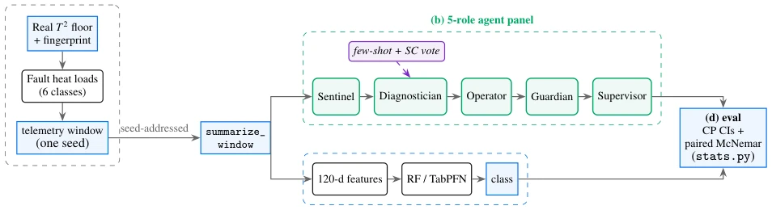
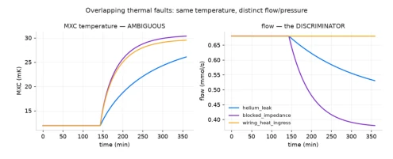
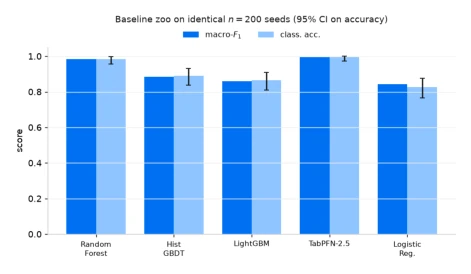
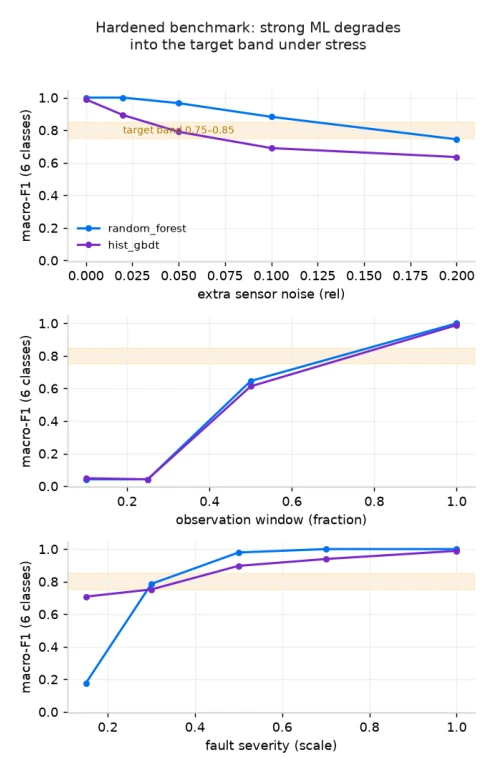
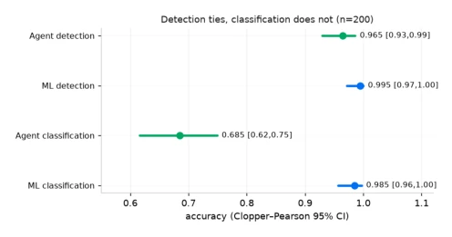
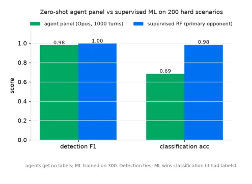
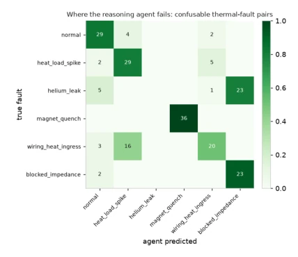
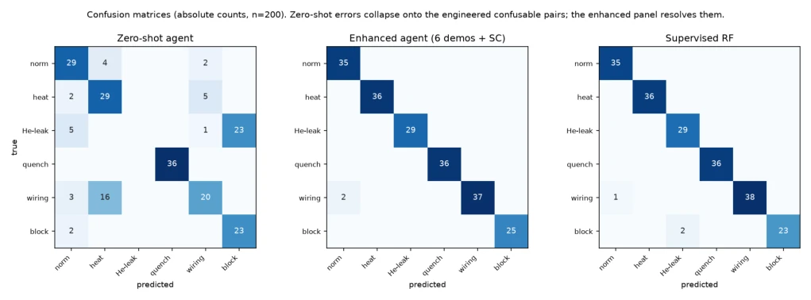

This paper attempts to replace traditional supervised learning with an LLM agent panel for quantum refrigerator fault diagnosis, and the results are somewhat "Versailles"-style (humblebragging). Zero-shot detection capability is on par, but classification performance is unsatisfactory, only catching up to Random Forest with 6 few-shot examples + self-consistency voting. Most ironically, the multi-agent structure did not improve accuracy, relying purely on "audit safety" to prop up the performance. The simulator is quite robust, using physics models + real noise fingerprints, but "simulation-to-real" validation only stays at injecting physical faults, real hardware data is still lacking. Conclusion: LLM can diagnose, but do not expect it to be stronger than traditional ML, unless you provide sufficient prompts. Not to mention the inference latency is as high as 88 seconds, how many rounds can this cost support in the industry? However, it honestly reported the "hallucination" of multi-agents in accuracy, instead being more reliable than those papers boasting collaborative advantages.
研究动机Motivation
超导量子计算机依赖稀释制冷机，但故障诊断仍依赖阈值报警，无法指出具体物理故障 [10]。现有 ML 方法如 LSTM 或异常检测虽在大型低温系统有应用 [11, 12]，但面临标签稀缺、硬件故障罕见且不可复现的问题。每个新制冷机缺乏历史故障数据，导致监督学习难以落地。此外，传统规则系统对传感器噪声敏感，难以区分物理上混淆的故障（如氦气泄漏与堵塞）。本文旨在填补这一空白，将遥测数据转化为可解释的诊断与行动建议，利用 LLM 的物理先验能力解决标签稀缺下的诊断难题，并构建可复现的物理基准。
Superconducting quantum computers rely on dilution refrigerators, but fault diagnosis still relies on threshold alarms, unable to point out specific physical faults [10]. Existing ML methods such as LSTM or anomaly detection, although applied in large-scale cryogenic systems [11, 12], face problems of label scarcity, hardware faults being rare and irreproducible. Each new refrigerator lacks historical fault data, leading to difficulties in implementing supervised learning. Additionally, traditional rule systems are sensitive to sensor noise, making it difficult to distinguish physically confused faults (such as helium leak and blockage). This paper aims to fill this gap, converting telemetry data into interpretable diagnosis and action recommendations, utilizing LLM's physics prior capabilities to solve diagnosis difficulties under label scarcity, and building a reproducible physical benchmark.
The system includes a physics-driven digital twin and a multi-agent operation layer. The twin generates temperature trajectories based on T2 dilution cooling laws, superimposed with noise fingerprints learned from BlueFors logs, injecting 6 types of physical faults (such as helium leak, magnet quench), ensuring faults are physically distinguishable but temperature-confused. The operation layer adopts a 5-role LLM panel: Sentinel detects anomalies, Diagnostician classifies, Operator suggests, Guardian vetoes safety, Supervisor adjudicates. The core innovation lies in In-Context Learning intervention: improving classification accuracy through comparative few-shot demonstrations (for easily confused faults) and self-consistency voting, rather than relying on multi-agent debate or self-correction. Additionally, the system designs a confidence gating mechanism to suppress false positives in continuous monitoring, and ensures fair comparison with supervised baselines through strict paired McNemar tests. The Guardian role serves as an independent safety veto mechanism, preventing hardware damage caused by misdiagnosis, embodying a safety-first design philosophy.
Zero-shot comparison conducted on 200 seed scenarios (1000 interaction rounds). Baselines include Random Forest, TabPFN-2.5, and engineering rules. Metrics are Detection F1 and Classification Accuracy. Under zero-shot, Agent detection shows no significant difference (p=0.07), but classification accuracy 0.685 is far lower than RF's 0.985. After introducing 6 few-shot demonstrations + self-consistency voting, classification accuracy rises to 0.990, catching up to RF. Ablation shows few-shot is the main gain source, multi-role structure only improves auditability not accuracy. Continuous monitoring test shows detection latency is limited by polling interval. Additionally, in a sweep of 9 seed and fault combinations, the Agent can detect faults within one polling cycle, but false positive rate depends on the backend model. Preliminary check of simulation-to-real shows, the recall rate of the real machine telemetry window with injected physical faults reaches 100%, but lacks real fault label verification.
其他图片Other Figures

Figure 1: End-to-end system. The twin (a) renders a telemetry window from one seed; a single summarize_window feeds the identical window to both the 5-role agent panel (b) and the supervised ML path (c). Because both methods see the same seed-addressed scenarios, the head-to-head uses the exact paired McNemar test (d). The same panel runs as a continuous monitor (e) over a rolling window at a fixed poll cadence. Dashed violet: the optional few-shot/self-consistency levers (Section 7).
Figure 5: The five-role pipeline. Solid: the fixed zero-shot path. Dashed (violet): the two optional, evidence-backed levers attached to the Diagnostician (Section 7). Defaults pre- serve exact zero-shot behavior.

Figure 4: Three thermal faults overlap on MXC temperature (left, ambiguous) but separate on the flow channel (right, dis- criminative). A static temperature snapshot cannot classify them; a supervised model can still reach macro-F1 0.983 from temperature trajectory features alone (Table 1), so the over- lap is a difficulty for snapshot- and zero-shot reasoning, not an information-theoretic barrier. Flow and pressure are the physically direct, noise-robust discriminators, and are what the engineered baseline (Section 5) exploits.

Figure 6: Baseline zoo on identical n=200 held-out seeds (sev × 0.5), with 95% CIs on accuracy. TabPFN-2.5 is the strongest opponent; we keep the random forest as the primary head-to-head opponent because it is fully local and repro- ducible, and report TabPFN-2.5 as the stronger foundation- model bar.

Figure 7: Supervised ML under realism stress. Macro-F1 de- grades as the observation window shrinks and severity drops, into a non-saturated regime.

Figure 9: Clopper–Pearson 95% confidence intervals on ac- curacy (n=200; detection accuracy 0.965/0.995, classifica- tion accuracy 0.685/0.985 for agent/RF). These are the raw- accuracy proportions the exact tests run on, and differ from the detection F1 reported in Table 3. The detection intervals overlap heavily (McNemar p = 0.07: no significant differ- ence), while the classification intervals are disjoint (McNemar p < 10−15: the ML advantage is not sampling noise).

Figure 8: Head-to-head. Detection shows no significant differ- ence; the supervised model wins classification, having trained on 300 labels the zero-shot agent never saw.

Figure 10: Zero-shot agent confusion matrix on the n=200 held-out scenarios (rows: true class; columns: the Supervi- sor’s predicted class; cells: scenario counts). The two dom- inant off-diagonal cells are the engineered confusable pairs — helium_leak→blocked_impedance (23 cases) and wiring_heat_ingress→heat_load_spike (16 cases) — which the twin was built to make ambiguous on temperature; the off-diagonal mass therefore concentrates exactly where a priori physics predicts, evidence the evaluation measures what it was designed to rather than diffuse error. The enhanced panel closes these cells (Fig. 11, Table 4).

Figure 11: Confusion matrices with absolute counts (n=200; recomputed from the released turn logs by scripts/analyze_turn_logs.py). Zero-shot errors collapse almost entirely onto the two engineered confusable pairs — 23/29 helium_leak windows are called blocked_impedance, and 16 wiring_heat_ingress are called heat_load_spike. The enhanced panel and RF are near-diagonal.